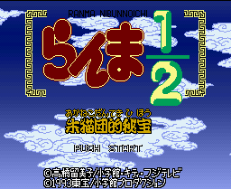
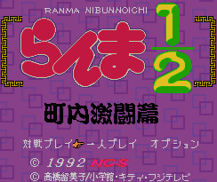
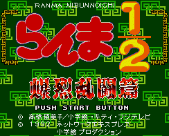
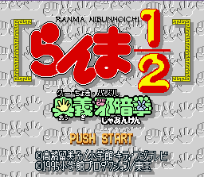
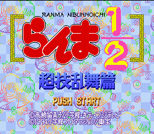

SNES Games - Ranma 1/2

Role-playing game featuring the cast of Ranma 1/2. Combat is non-real-time based on speed scores. Oddly enough,
this allows Ranma (the fastest character) to take extra turns if you get his speed high enough. Ranma, Akane, Shampoo,
Ryouga, Genma, and Mousse are the playable characters and are controled in that order. Cologne allows you to switch
party members latter on. Happosai is a boss but not the end boss. The Kunos pretend to be boss characters. Ukyou
just kind of sits there. -- from Shaun ?

Controls
- A button: Special Attack
- B button: Kick
- X button: Jump
- Y button: Punch
- L button: [not used]
- R button: Block(?)
- Start: Pause
- Select: [not used]
This game was renamed Street Combat in the US. People who bought or rented this will recognize the moves and
play, and even the English lettering, in this first Ranma 1/2 title (yes, you knew that clown's spinning looked familiar). In
this game, whose title means Neighborhood Combat, Ranma enters a tournament for the prize of seeing China.
He believes that, if he wins, he can revisit China and get rid of his curse of changing gender when hit with cold water.
However, there are others who either want the prize themselves or just want to beat up Ranma. He battles through six
enemies (Genma, Kodachi, Kuno, Principal, Shampoo, and Ryouga), deciding whether to battle as a boy or girl. There are
two bonus stages (missing from the American version) where you fight Happosai and Cologne in the Tendou training hall,
hitting them as many times as you can. Your reward for winning the tournament is , well, seeing China alright. I won't
spoil the Ranma-esque ending, but just think of "Ranma and Juliet", and how that episode ended.
Control is easier than most SF-like games (too simplistic for some). Pressing X button will unleash a special
attack, but you can execute other moves by pressing punch and kick together, or pressing punch rapidly, or jumping
away from an opponent or straight up and hitting X button (only some of these work on certain characters). In
addition, you have various punches and kicks by pressing a direction and the attack button.
To get an enhanced VS. mode selection, hold down L button and R button and then move the cursor to
VS (first option). Hit Start, and then let go of L button and R button. You can choose whether
the opponents are computer or human (and if they are computer, their play attributes), the stage with Select, and
best of all, you can not only play the same character but now Happosai and Cologne are at your disposal!
To get extra credits in Story Mode, go to Options, and go to Credits. Press Select repeatedly
until the credit counter turns to 50. Overall, this game is too short, but is a fun piece of Ranma merchandise. In my
opinion its graphics are better than Hard Battle's, even though the characters are smaller, and it's a shame we didn't get
to see the real game here in the US. -- from Roger Nystrom

This is the second fighting game based on the series Ranma 1/2. The US release was titled Ranma 1/2: Hard Battle
and contained horrible dubbing of the voices. Fortunately, none of the characters were redesigned. There is a
review available at
Anime Super Famicom Web Resource Center

Controls
- A button: Rotate
- B button: Rotate
- X button: Rotate
- Y button: Rotate
- L button: [not used?]
- R button: [not used?]
- Start: [not used?]
- Select: [not used?]
This is a unique Tetris-type game that bases matches on the game Rock, Paper, Scissors. You get to choose a
character to play in story mode or VS mode. Various three block rows slowly fall from the top of the screen. Each block
is either a stone (purple or green), a scissors symbol, a paper symbol, and a rock symbol. To remove items, you must
match blocks that would win a round of Rock, Paper, Scissors. For example, placing a paper symbol on top of a
rock symbol removes the rock symbol and any other rock symbols directly below that one. Why? Because paper covers
rock.
The purple and green stones can be removed as well, but I am not sure of the mechanics that determine how. Also, if
you remove enough items at one time, you can unleash a Special Attack (e.g., Ranma's Kachü Tenshin Amaguriken)
on your opponent. This will cause many blocks to fall into your opponent's area; the stronger the attack, the more blocks
that fall down on your opponent. Of course, your opponent can do the same to you. I have yet to get a full understanding
of the mechanics of how attacks are measured.

This is a fighting game using twelve of the characters from Ranma 1/2. You can choose from a story mode, a tag team
mode, and a VS mode. A US release of this game was scheduled; but due to the lousy translation and dubbing of the previous
game Ranma 1/2: Hard Battle, it was scrapped a few months before it was to be released (I do have a US magazine
advertisement of it). A complete description of the game and how to play it is in the
FAQ. There is a
review available at
Anime Super Famicom Web Resource Center
© 1997 - Luis A. Cruz